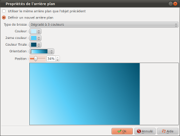
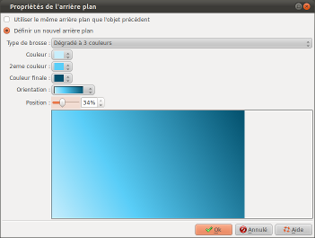

Introduction
La boite "Propriétés de
l'arrière plan" permet de définir le réglage
d'arrière plan de la diapositive (fond d'écran) :

Cette boite est appelée en double cliquant sur la zone d'arrière plan d'une diapositive, dans la barre de temps.

Cette boite est appelée en double cliquant sur la zone d'arrière plan d'une diapositive, dans la barre de temps.
Description de la boite de dialogue
Utiliser le même
arrière plan que l'objet précédent.
Si cette option est
sélectionnée, la diapositive n'aura pas de
définition d'arrière plan mais utilisera le
même arrière plan que la diapositive
précédente :
Définir un nouvel arrière plan- Si la diapositive précédente ne possède pas non plus de définition d'arrière plan, on remontera encore d'un cran jusqu'à ce qu'une diapositive possède une définition d'arrière plan.
- Si aucune diapositive précédente ne possède de définition d'arrière plan, alors un fond noir sera utilisé.
Si cette option est
sélectionnée, la diapositive aura sa propre
définition d'arrière plan.
Dans ce cas, les zones suivantes permettent d'effectuer le réglage du fond d'écran.
Dans ce cas, les zones suivantes permettent d'effectuer le réglage du fond d'écran.
| Brosse unie |
Permet de
sélectionner une couleur unie. |
| Dégradé
à 2 couleurs |
Permet de sélectionner un dégradé de 2 couleurs |
| Dégradé
à 3 couleurs |
Permet de sélectionner un dégradé de 3 couleurs |
| Image de la librairie |
Permet de sélectionner une image parmi celle présente dans la librairie |
| Image depuis un fichier |
Permet de
sélectionner une photo ou une image. Fichier indique le nom du fichier actuellement sélectionné.  permet de
sélectionner un fichier. permet de
sélectionner un fichier. permet d'appeler la
boite de dialogue Recadrer
et/ou corriger une image ou une vidéo pour
effectuer un recadrage ou des réglages sur
l'image permet d'appeler la
boite de dialogue Recadrer
et/ou corriger une image ou une vidéo pour
effectuer un recadrage ou des réglages sur
l'image |
Voir aussi
ffDiaporama 1.0